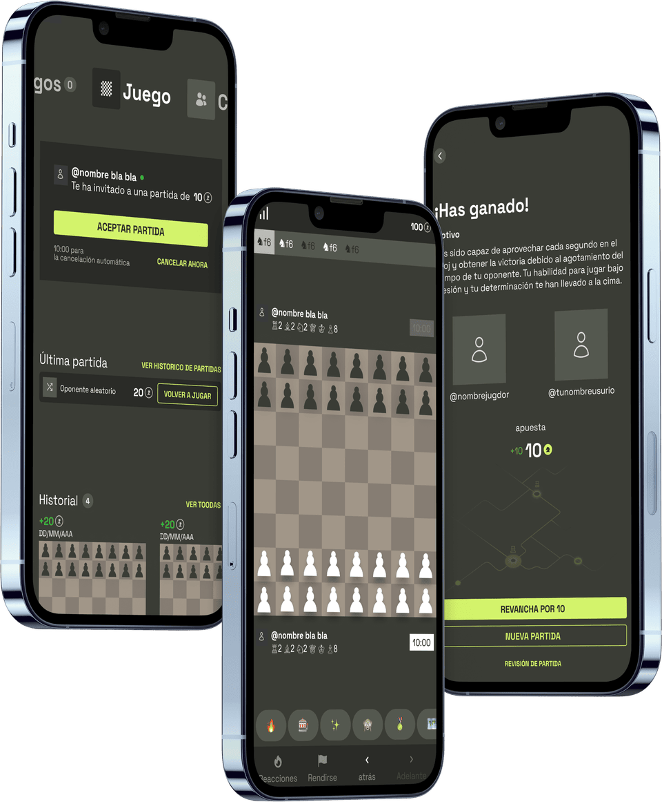
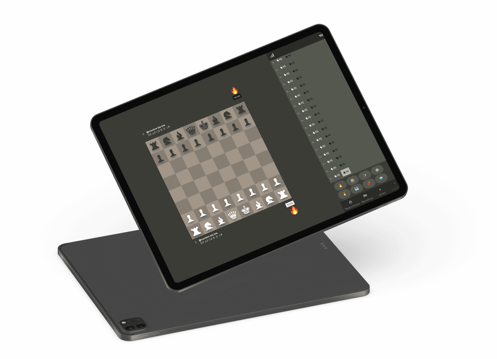
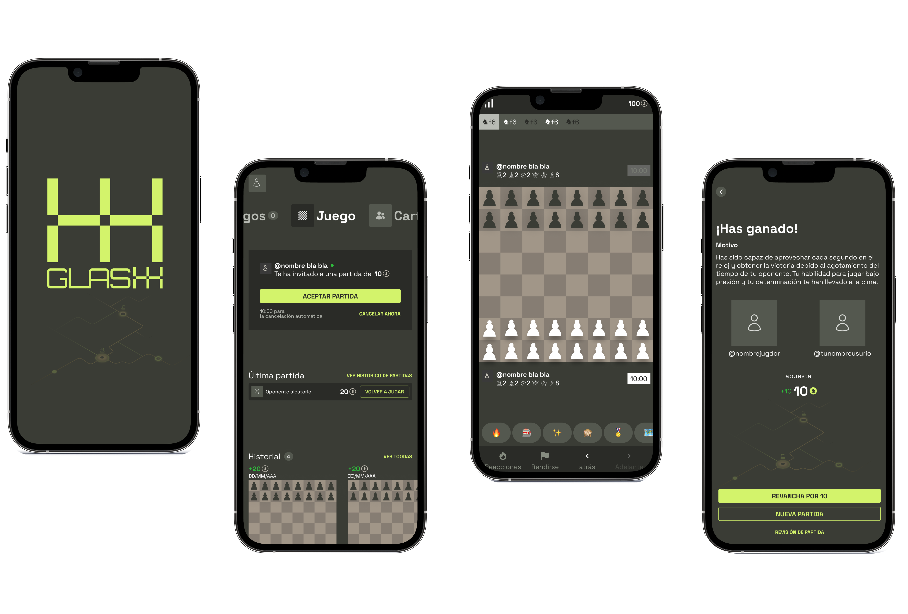

Glashh
That's the scepticism Glashh had to earn its way past — building the trust, fairness and onboarding a betting chess app needs before anyone risks a single euro.
Product Designer, UX/UI Design, Front-end Dev
Figma · Pug, Sass
Chess & betting
2023 · on hold
Glashh is a chess web app with a twist: players bet money or tokens on their own matches. The startup had a clear idea of the core business, but we audited it together to expand its initial scope.
I joined as the Product Designer for this startup project, focusing on shaping the right features and delivering a design that was simple — but that actually worked.
I led research and feature definition, mapped the game's user flows, and built the prototype end to end. Given the small team, I also worked front-end, bringing the design system into the codebase — around 80 hours of UX/UI design and 100 hours of development in total.
We also built the full visual system in-house — naming, logo, typography and colour — landing on a lime green that reads as money, risk and quick thinking. This wasn't a project about pushing visual design forward, though; the interesting work happened upstream, in the trust and fairness mechanics.
My knowledge of the chess-and-betting space was scarce, so I started with interviews. Three types of players emerged — each with a different level of chess knowledge, a different reason to join, and a different fear that could stop them from playing.
How might we build trust? How might we build engagement?
Realistically, would anyone put money into a random app they'd never used before — especially one brand new to the market? That scepticism was the real starting point.
A freemium model was the only way in.
I designed a "hard coin" backed by real money and a "soft coin" earned just by playing free matches — trust builds before any real money changes hands.

How might we help players avoid being swindled?
Their first match is played against a bot that reads their level, so from the second match on they're playing people of similar skill — which also keeps stronger players engaged from the start instead of grinding through beginners.

The trust-first system — tiered stakes, a bot-calibrated first match, and a freemium wallet — shipped as a working prototype covering the full player loop, from browsing and betting to playing and settling a match. I built the front-end myself, end to end, bringing the whole design system into the codebase.
Glashh has been on hold since 2023, but the trust-first foundation is built and ready to pick back up.